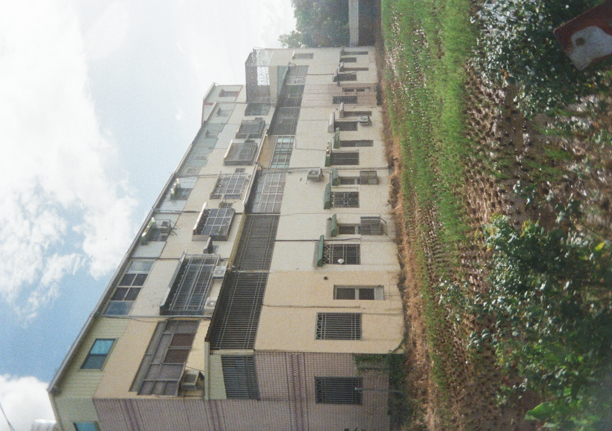
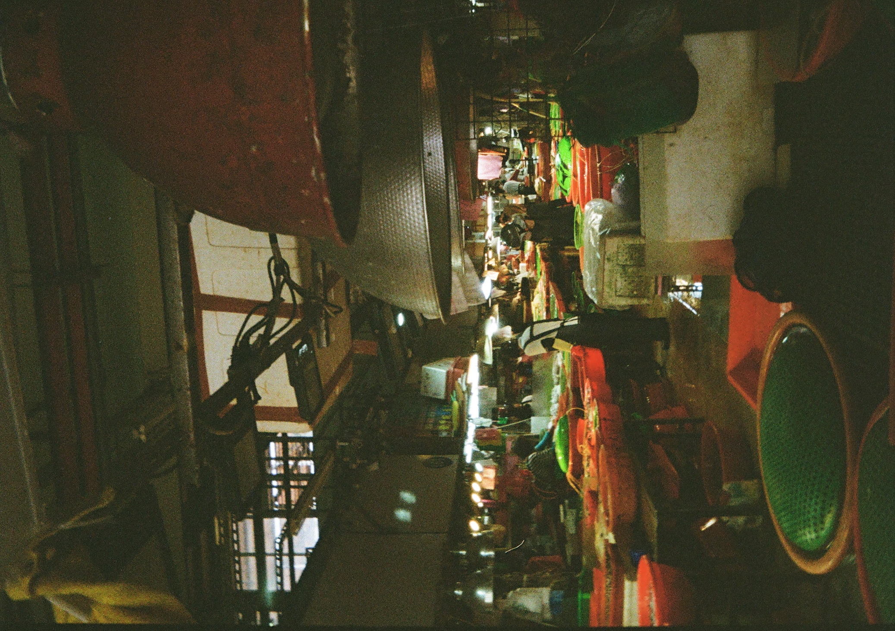
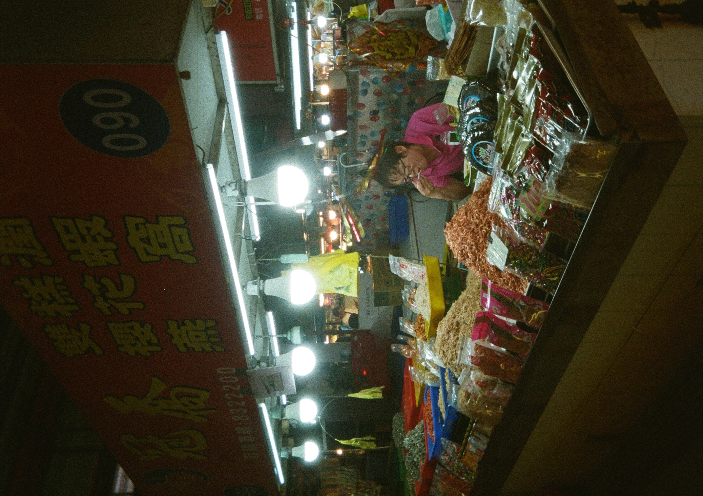
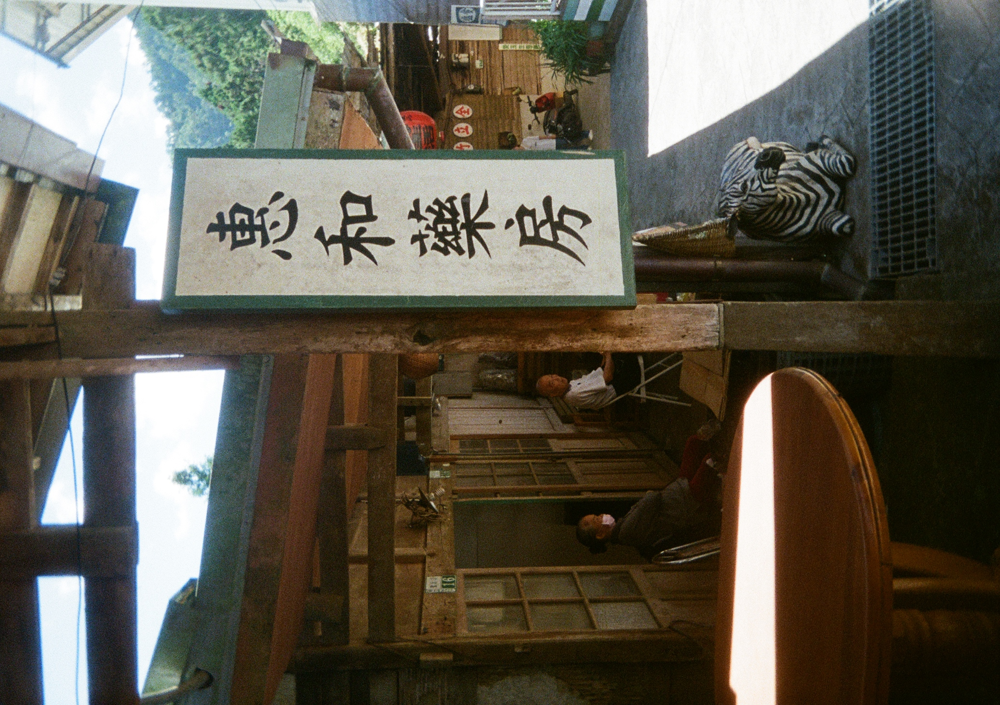
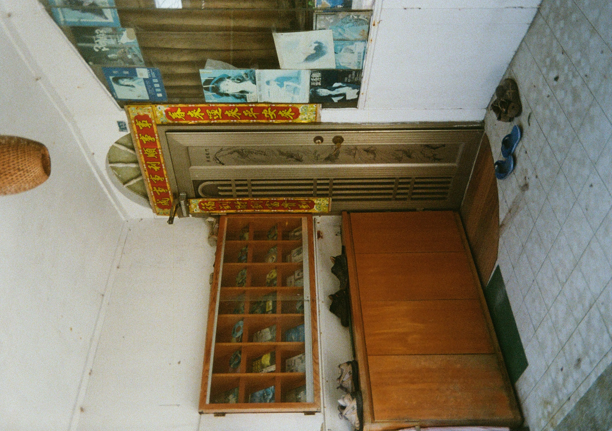
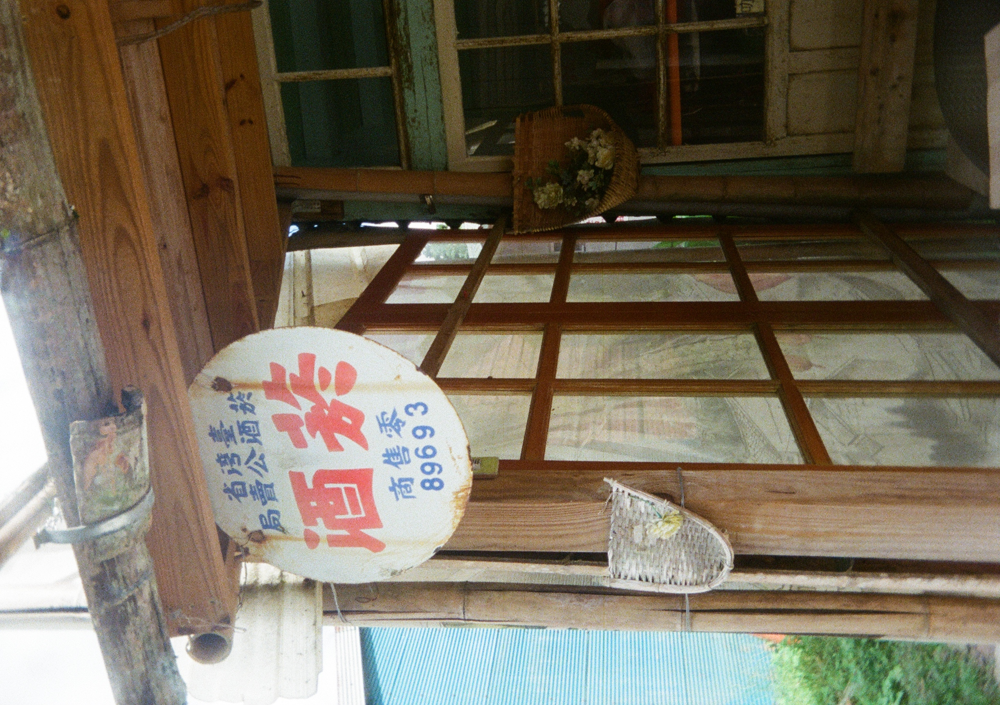
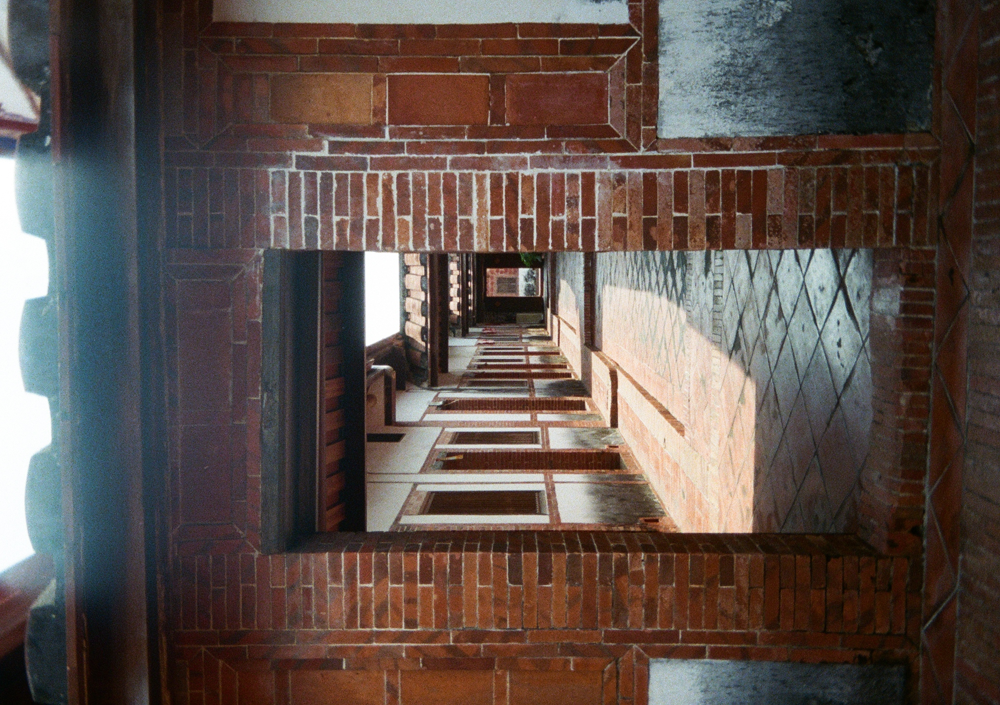

那些年，我們一起吹的冷氣
05 August 2026

一天，又一天
的大熱天
害我們美國人
被困在冷氣口的正前方。
不過，若有一天
能忍耐
外面的大熱天
那麼，會遇到什麼樣的台灣？
每次回台灣，都剛好是最熱的季節，讓我每個暑假跟台灣冷氣交好朋友。最愛波士頓寒冬的我，只好盡可能避開台灣夏天的大熱天，天天尋找我的涼爽好朋友。這樣講，台灣究竟有多熱？
台灣熱，不只是熱，還又悶又曬。太陽很曬，穿上長袖才不會曬成葡萄乾，又覺得長袖熱，滿身都流汗，但外面還是潮濕，汗也散不掉，反而造成濕濕黏黏的皮膚，總之令人感到類似被電鍋煮熟的感覺。
台灣冷氣跟台灣熱一樣，也不只是冷氣，還代表阿嬤的愛心。儘管她不常需要開冷氣，但我們美國人每次走進她家，第一件事，無論如何，是幫我們開冷氣。耐熱又怕冷的阿嬤，竟然對我們容易熱死的美國人很貼心，自己坐在暖呼呼的椅子，披著外套，纏繞著圍巾，還能對我們說：「欸，你們會不會熱？來，來，冷氣調低一點。」 阿嬤，妳太厲害了！
台灣的夏天，想去哪裡，必須先確認是否有冷氣，否則真的會受不了，連吃也吃不下去，走也走不動，只想衝回車上吹舒服的冷氣。所以，我們回台灣就是不停地上網仔細觀察個個地點的照片與評論，如此不知不覺就突然變成Google Maps 高手！
我們這麼瘋狂地追冷氣，彷彿夏天把台灣的冷氣升級到世界第一等。不過，如此追逐冷氣，能出去玩的地方反而非常有限。除了餐廳、百貨公司、便利商店、博物館、咖啡館，哪裡都太熱。文化豐富、色彩繽紛的台灣，怎麼忽然變得這麼小？


確實，當我放棄自己的舒適需求時，試著忍耐，就看見台灣的另一方面，精彩的夜市、菜市場、動物園、健行步道、老街、老店都不見得有冷氣。



逛台灣的老街，要熱一下，卻也耐人尋味。體驗古老建築的氛圍與品嚐台灣最獨特的傳統滋味，令人十足滿意。而且能遇到那些不管溫度多高，似乎永遠不會覺得熱的老人家，默默地提醒我們：多忍耐，多努力，總有一天能跟他們一樣，無冷氣也能接受台灣的大熱天。
我大概一輩子都會覺得台灣的夏季非常熱，但這個熱帶來的痛苦與困難，反而在記憶中留下快樂的成就感，讓我對台灣的印象更深刻、更難忘、更有個性，只需要想起熱，就能想起我在台灣珍惜的回憶。
熱又悶又曬的台灣、令人想整天關在家裡面的台灣、擁有世界第一等級冷氣的台灣、跟電鍋一樣的台灣，皆是我從小愛到大的台灣！
